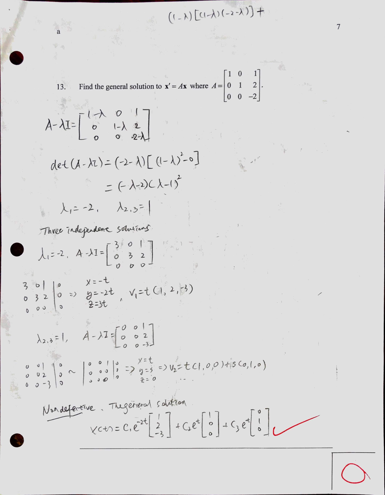
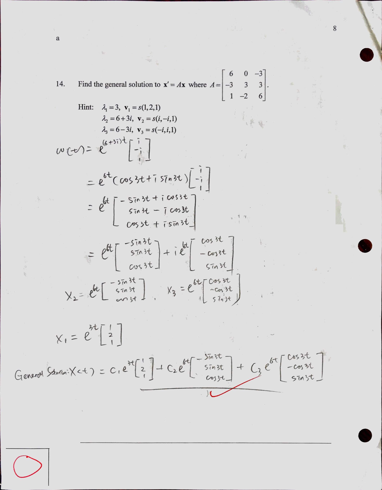

0904 Vector Differential Equations: Nondefective Coefficient Matrix
Real eigenvalues
Let A be an n×n matrix of real constants. If A has n real linearly independent eigenvectors v1,v2,⋯vn, with corresponding eigenvalues λ1,λ2,⋯λn(not necessarily distinct), then the vector functions {x1,x2,⋯,xn} defined by
xk(t)=eλktv,k=1,2,⋅,n
for all t, are linearly independent soltuin to x′=Ax on any interval. The general solution to this vector differential equation is
x(t)=c1x1(t)+c2x2(t)+⋯+cnxn(t)
Complex Eigenvalues
Homework
9.4 p.607 1-15 odd, 17, 18

